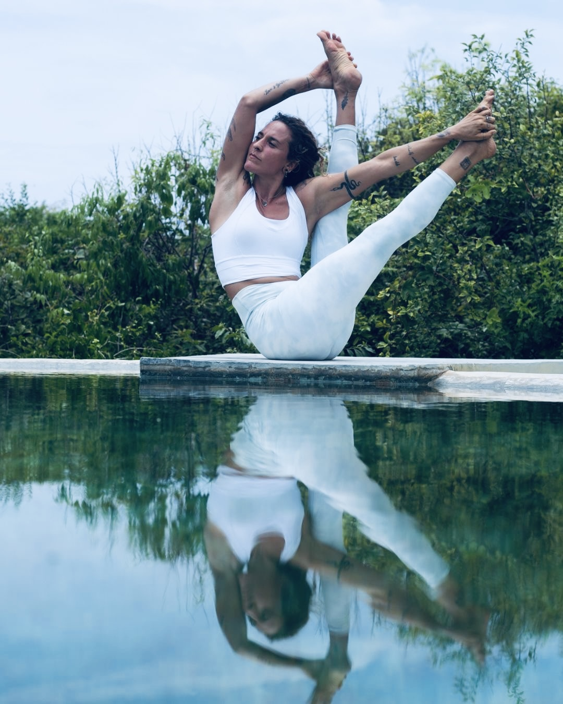

Yoga classes in Puerto Escondido, the surrounding coast, and online — rooted in the belief that the practice is a journey back to yourself.

For me, yoga has never just been about the body. It is a spiritual path — a way of peeling back the noise of the world and returning to something true within yourself. Every class I teach carries that intention. Whether we are moving through a flowing sequence or sitting in stillness, the practice is always pointing inward.
My background spans Kundalini, Yin and Restorative, and Vinyasa Flow. These days I find myself most drawn to flow — the way a well-sequenced class can carry you somewhere beyond thought, beyond the body, into a quiet open space that is hard to describe but easy to feel.
Alongside yoga, I began a meditation course nearly two decades ago — and it changed everything. That path led me deeper into spirituality and continues to shape how I teach. I draw from many traditions and techniques to help students build a real, living daily meditation practice, either on its own or woven into the yoga.
Work With Me OnlineMy first love and current home. Breath-linked movement that creates heat, rhythm, and a meditative state in motion. This is where I spend most of my time as a teacher.
Deep, slow, and surrendered. Long holds that release the connective tissue and invite genuine stillness. A powerful complement to any active practice.
Traditional Kundalini practice — kriyas, breathwork, mantra, and meditation. Precise, energetic, and transformative for those drawn to the deeper layers.
Drawing from multiple traditions, I help you build a daily meditation practice — woven into yoga or as a standalone path. The gateway to everything else.
"Yoga is not something you do. It is something you remember — a quiet knowing that was always already inside you."— Chia Freestyle
My main focus right now is working with students online, one-to-one. Wherever you are in the world, we can build a practice that is completely tailored to you — your body, your schedule, your spiritual path. This is where the real depth happens.
Nearly two decades ago I began a meditation course that set me on a path I am still walking. I draw from many traditions — breathwork, mantra, visualization, and stillness practices — to help you build a daily meditation practice that actually sticks, whether on its own or woven into yoga.
Structured programs you can follow from home, designed around flow, restoration, or an integrated yoga and meditation approach. Built for real progress, not just content — something you return to again and again.
I have led yoga retreats and participated as a teacher in other people's events for years. If you are organising a retreat, wellness weekend, or special event and need a yoga teacher who brings depth, experience, and heart — I would love to hear from you. I am open to travelling and collaborating.
Looking for something more personal? I can create a retreat or yoga experience designed entirely around you — online or in person, individual or small group. Tell me what you are looking for and we will build it together.
When I am in Puerto Escondido I teach locally — beach sessions, studio classes, and private in-person sessions around town and along the coast. Check the calendar or reach out to find out what is coming up.
Whether you want to start a 1-on-1 online practice, build a daily meditation habit, bring me to your retreat, or create something completely custom — reach out. I would love to hear what you are looking for.